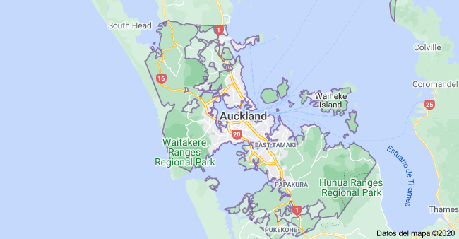
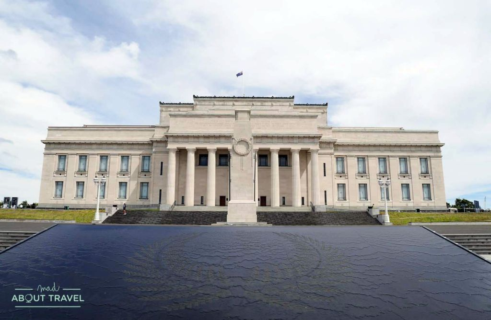
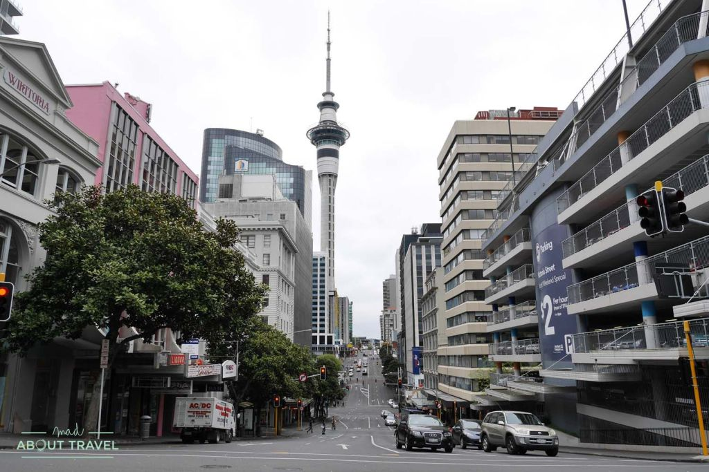
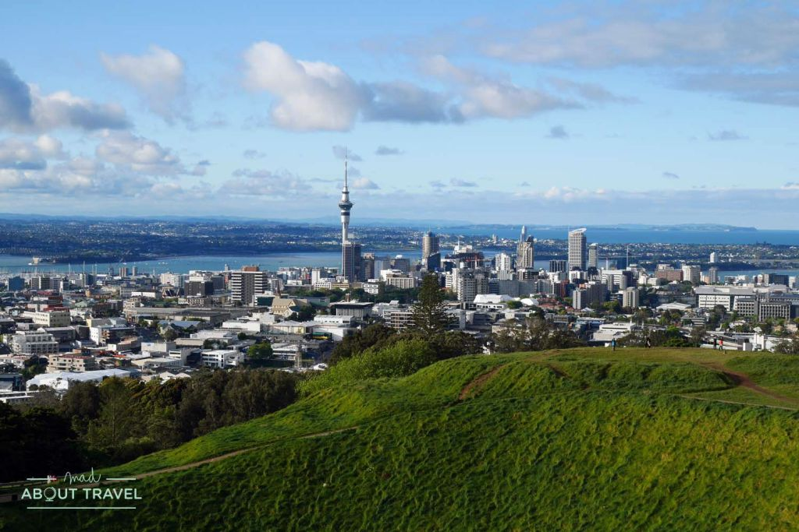

Auckland
Auckland es la ciudad más grande de Nueva Zelanda situada en la Isla Norte. es la mayor del país, así como el mayor núcleo de población del sur del Pacífico, contando con más de 1 440 600 habitantes, más de una cuarta parte de la población del país, y con un crecimiento mayor que el del resto del estado. Aunque Wellington es la capital de Nueva Zelanda, Auckland es la ciudad más poblada y, de hecho, la capital económica del país. Auckland es a su vez la capital de la región homónima.
Auckland se encuentra entre el golfo de Hauraki y el océano Pacífico al este, la cordillera Hunua al sureste, el puerto de Manukau al suroeste y la cordillera Waitakere y menores cordilleras al oeste y noroeste. La parte central de la zona urbana ocupa un estrecho istmo situado entre el puerto de Manukau, abierto al mar de Tasmania, al oeste y el de Waitemata, que se abre al golfo de Hauraki del océano Pacífico, al este. Es una de las pocas ciudades del mundo que dispone de dos puertos en dos cuerpos de agua distintos. Al norte se encuentra la península de Whangaparaoa y al sur las Bombay Hills.
Fue fundada en 1350 por los maoríes y en 1840 por los europeos.
Su superficie es 1086 km².
Clima
El clima de la ciudad es templado oceánico, con veranos suaves e inviernos frescos. La temperatura media en el mes más cálido, febrero, es de 20 °C, mientras que en julio, el más frío, es de 11 °C. La temperatura más alta hasta la fecha fue de 30,5 °C, mientras que la más baja se registró en -2,5 °C.
Economia
La mayoría de las grandes corporaciones internacionales tienen oficinas en Auckland, ya que es vista como la capital económica del país. Las zonas más caras donde las sociedades deciden asentarse es el Auckland CBD, el corazón financiero de la ciudad. Más concretamente entre Queen Street y el Viaduct Basin.15 Una gran cantidad de trabajadores desempeñan sus empleos en la zona industrial de South Auckland. Esta es una de las áreas industriales y comerciales más grandes del Gran Auckland, junto a la parte más occidental de Manukau City, bordeando Manukau Harbour y el estuario del Tamaki River.
El estatus de la ciudad como centro más importante del comercio en todo el territorio se reflejan en los ingresos de la clase media-alta por trabajador y año, que es de 44 304 dólares neozelandeses en 2005.
Lugares Turisticos
Auckland Domain: Museo de Auckland + Wintergarden
Con unas 80 hectáreas, el Auckland Domain es una enorme zona verde perfecta para hacer deporte, admirar las vistas y respirar aire puro. En su punto más alto está el Museo de Auckland, un templo neoclásico donde se pueden ver exposiciones de lo más interesante sobre la cultura maorí y la historia local.
Es uno de los parques mas grande de la ciudad con vista al golfo.
Sky Tower
Con sus 328 metros de altura es imposible no ver la Sky Tower desde cualquier lugar de Auckland. Esta enorme construcción que se levanta en el centro de la ciudad es la estructura más alta del hemisferio sur. Vale la pena subir hasta la plataforma de observación, aunque sólo sea para pasear por el suelo de cristal que te permitirá sentir que la ciudad está a tus pies
Mount Eden
Subir a Mount Eden es una de las primeras cosas que hacer en Auckland.
Es el cono volcánico más alto de Auckland, con sus 196 metros y ofrece una de las mejores vistas de toda la ciudad y de las islas que la rodean. Llegar hasta la cima es un paseo por un parque que parece salido de El Señor de los Anillos. Una vez arriba, asegúrate de no pisar el cráter, conocido como Te Ipu Kai a Mataaho, ya que es sagrado para los maorís. Una buena opción para acercarte es hacer uno de estos tours de medio día por Auckland.
Hoteles
SkyCity Hotel Auckland.

Hotel 5 estrellas.
Este hotel refinado, que forma parte del casino y centro de eventos Skycity Auckland, junto a la Sky Tower de 328 m de altura, se encuentra a 1 km de la estación de tren Britomart y a 11 minutos a pie del Museo Marítimo de Nueva Zelanda.
El precio por día es de 6096 UYU
Numero de contacto: +64 9-363 6000.
Base Backpackers Auckland
.webp)
Hotel 2 estrellas.
Este albergue informal, ubicado en una calle comercial, se encuentra a 5 minutos a pie de la Sky Tower (una torre de 60 plantas), a poco más 1 km de la estación de tren de Britomart y a 6 km del zoológico de Auckland.
El precio por día es de 800 UYU.
Numero de contacto: +64 9-358 4877.
Ibis budget Auckland Central
.webp)
Hotel de 3 estrellas.
Este hotel económico, ubicado en una torre sencilla, se encuentra en el animado distrito central de negocios de Auckland, a 4 minutos a pie de la famosa Sky Tower y a 15 minutos a pie de la estación de tren de Britomart.
Precio de por dia es de 3571 UYU.
Numero de contacto: +64 9-308 9140.